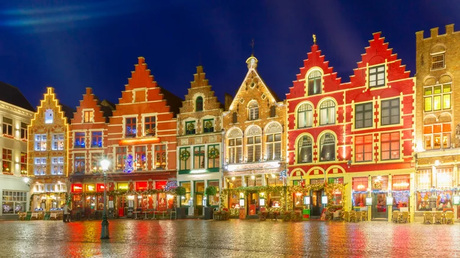
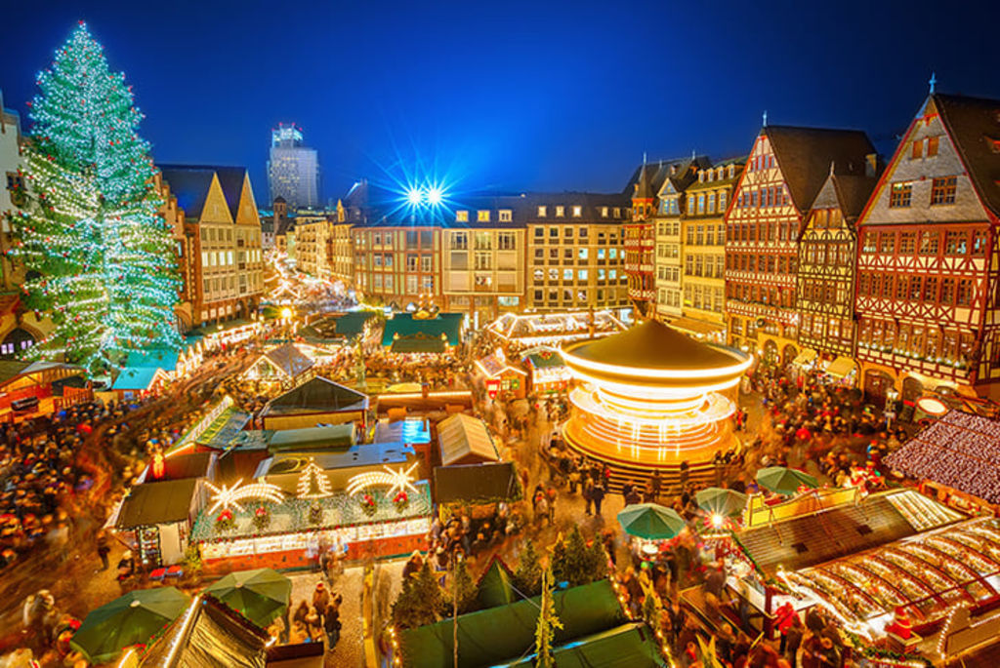

Belgium: Bruges

Christmas time in Bruges provides the perfect picture of a European holiday season. Medieval architecture is illuminated by holiday lights and surrounded by stunning Christmas markets filled with crafts and local food and drink specialties. Enjoy a Belgian hot chocolate or some glühwein, the traditional holiday mulled wine.
Where are the Christmas markets in Bruges?
Grote Markt Christmas market: The main attraction is the Grote Markt Christmas market. It’s in the Grote Markt square with lots of stalls selling a range of Christmas goods and local food. There’s also an ice rink and a large Christmas tree to help create a lovely atmosphere.
Simon Stevinplein Christmas market: The other is the Simon Stevinplein Christmas market which focuses on artisanal craft products. The ambience here tends to be cosy and is a great place to find unique gifts for loved ones.
Why visit Bruges for its festive markets?
Festive treats: Warm yourself up with a steaming mug of Belgian hot chocolate, thick and decadent – especially with whipped cream and cinnamon added. We can also recommend the stalls offering a traditional Belgian waffle dusted with icing sugar or topped with fresh fruit and whipped cream. There’s also the savoury delight called ‘mitraillette’ (Hint: you may see this served as an ‘Américain’). It’s popular with students, apparently, and hungry Brits who get to enjoy a sarnie packed with meat, French fries, meat and a sauce. It’s great for a cold day and very filling. We can also recommend the Belgian treat of Speculoos which is a spiced biscuit made at this time of year and comes in a wide range of shapes.
Handcrafted treasures: The markets in Bruges offer a trove of craftsmanship including unique Christmas ornaments depicting iconic Bruges landmarks like the Belfry or the Gruuthusemuseum. Visitors can also seek out cosy woollen scarves and toasty woollen mittens that keep out the cold weather. The markets are also good sources for the famous intricate lace doilies from the country’s rich textile tradition. You will also see skilled artisans, especially at the Simon Stevinplein Christmas market demonstrating their traditional crafts, like lacemaking and wood carving.
Festive entertainment: Enjoy the heart-warming and lively performances by local choirs singing traditional Christmas carols. We also enjoyed the dazzling light show which uses the city’s historic buildings and canals as a backdrop for festive patterns and colours. For those who enjoy skating, the ice skate is highly recommended. There are also impressive nativity scenes depicting the Christmas story scattered around.

Why choose Bruges this Christmas?
Including the historical charm, there are several other reasons that make Bruges’ Christmas markets stand out, including
Medieval fairytale setting: Visitors get to explore an impressive city, which is a UNESCO World Heritage Site, with its cobbled streets, picturesque canals and magnificent medieval architecture. As European Christmas markets go, the Bruges offering is one of the best.
Focus on Belgian delights: We really liked Simon Stevinplein Christmas market because it sets out to be something different from the main market. Here there’s a chance to showcase traditional Belgian delicacies and crafts, and for visitors to indulge in the rich culinary and artistic heritage of Belgium. The main market offers everything you expect a festive market to do.
Romantic winter wonderland: It’s known locally as the Winter Glow festival and with the twinkling lights, charming canals and horse-drawn carriage rides, the city offers a romantic and picturesque atmosphere.